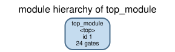
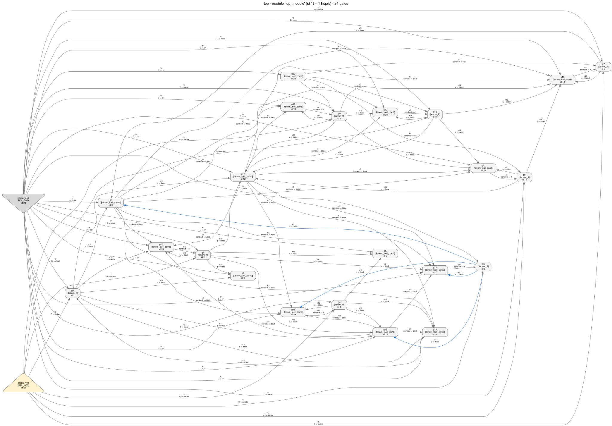
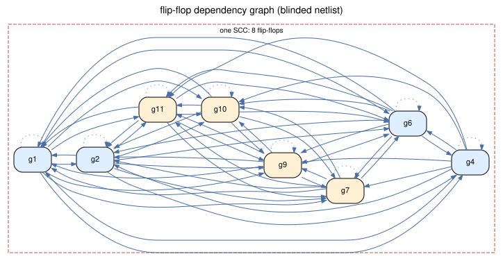
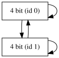
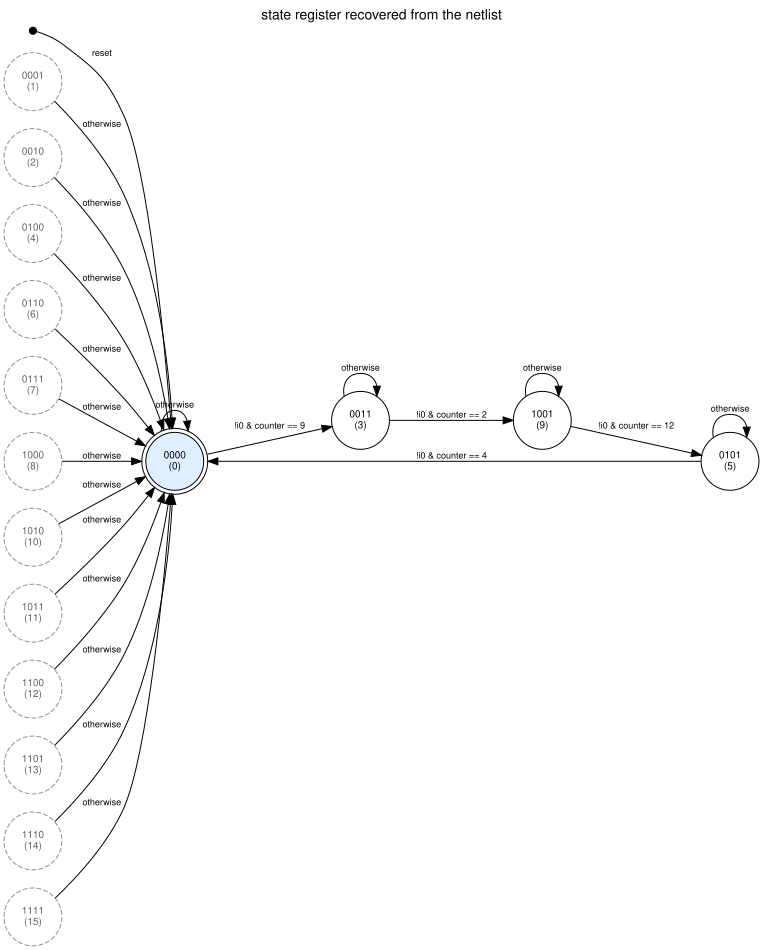
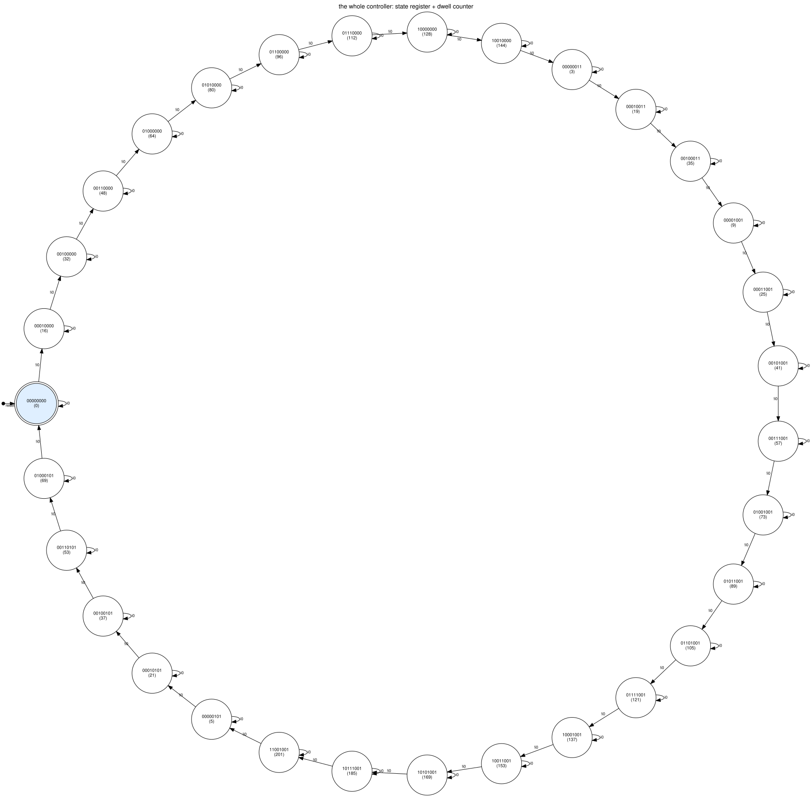

Agilex 3 reverse-engineering walkthroughs · 02
A complete worked example: real RTL, a real Quartus Prime Pro 26.1 run, a real
vendor netlist export, and the HAL analyses that take you from
tennm_lcell_comb soup back to a named state diagram. Every number and
every picture on this page was produced by the scripts sitting next to it, and
the walk is honest about the two places where a tool does not do what you would
hope.
recovered.vdesign.v is a four-phase Moore traffic-light controller. The light cycles
RED → RED+YELLOW → GREEN → YELLOW → RED, each
phase lasting a fixed number of clock cycles counted by a small dwell counter. A
hold input freezes it.
Two constraints shaped the RTL, and both matter later:
plugins/gate_libraries/definitions/AGILEX_TENNM.hgl models —
tennm_lcell_comb and tennm_ff, plus the two constant cells HAL
synthesizes for 1'b0/1'b1. No RAM, no DSP, no PLL, no IO buffers.hal_agilex models tennm_ff
only in the (d, ena, clrn) configuration. The counter is therefore written
as an explicit next-value mux, and the project file carries
set_global_assignment -name ALLOW_SYNCH_CTRL_USAGE OFF so Quartus cannot
fold that mux into the register's sclr/sload ports behind our back.module traffic_fsm (
input wire clk, // single clock
input wire rst_n, // asynchronous, active low; drops the light to RED
input wire hold, // 1 = freeze the controller in the current phase
output wire red, // lamp outputs -- Moore, decoded from `state` only
output wire yellow,
output wire green
);
localparam [1:0] S_RED = 2'b00,
S_RED_YELLOW = 2'b01,
S_GREEN = 2'b10,
S_YELLOW = 2'b11;
// Dwell time of each phase, in clock cycles, minus one.
localparam [3:0] T_RED = 4'd9,
T_RED_YELLOW = 4'd2,
T_GREEN = 4'd12,
T_YELLOW = 4'd4;
reg [1:0] state;
reg [3:0] tick;
reg [3:0] limit;
always @* begin
case (state)
S_RED : limit = T_RED;
S_RED_YELLOW : limit = T_RED_YELLOW;
S_GREEN : limit = T_GREEN;
default : limit = T_YELLOW;
endcase
end
wire expired = (tick == limit);
wire advance = expired & ~hold;
reg [3:0] tick_next;
always @* begin
if (hold) tick_next = tick;
else if (expired) tick_next = 4'd0;
else tick_next = tick + 4'd1;
end
reg [1:0] state_next;
always @* begin
state_next = state;
if (advance) begin
case (state)
S_RED : state_next = S_RED_YELLOW;
S_RED_YELLOW : state_next = S_GREEN;
S_GREEN : state_next = S_YELLOW;
default : state_next = S_RED;
endcase
end
end
always @(posedge clk or negedge rst_n) begin
if (!rst_n) begin
state <= S_RED;
tick <= 4'd0;
end else begin
state <= state_next;
tick <= tick_next;
end
end
assign red = (state == S_RED) | (state == S_RED_YELLOW);
assign yellow = (state == S_RED_YELLOW) | (state == S_YELLOW);
assign green = (state == S_GREEN);
endmoduleThe commented file is design.v; the intended behaviour
is written out separately in spec.md. Numbers to
remember: 2 state bits, 4 counter bits, 6 flip-flops, 4 states, and a light
cycle of 10 + 3 + 13 + 5 = 31 clock cycles.
The flow is the one tools/hal_agilex documents for its fixtures, reused
verbatim: post-synthesis (no fitting, so no placement noise), Agilex 3 device
A3CW135BM16AE6S, Quartus Prime Pro Edition 26.1.0 Build 110.
# quartus/traffic_fsm.qsf
set_global_assignment -name FAMILY "Agilex 3"
set_global_assignment -name DEVICE A3CW135BM16AE6S
set_global_assignment -name TOP_LEVEL_ENTITY traffic_fsm
set_global_assignment -name VERILOG_FILE ../design.v
set_global_assignment -name PROJECT_OUTPUT_DIRECTORY output_files
set_global_assignment -name ALLOW_SYNCH_CTRL_USAGE OFFcd examples/agilex3_walkthroughs/02_traffic_fsm/quartus
C:/altera_pro/26.1/quartus/bin64/quartus_sh.exe -t build.tcl
# build.tcl is exactly these two module invocations:
# quartus_syn traffic_fsm -c traffic_fsm
# quartus_eda --simulation --format=verilog --tool=questasim \
# --output_directory=simulation traffic_fsm -c traffic_fsm
# afterwards: keep simulation/traffic_fsm.vo, delete db/ incremental_db/
# output_files/ qdb/ dni/ -- nothing generated is committed except the .voQuartus said three things worth writing down, all of which come back later:
Info (284007): State machine "state" will be implemented as a safe state machine.
Info (17049): 2 registers lost all their fanouts during netlist optimizations.
Info (21057): Implemented 20 device resources after synthesis
Info (21061): Implemented 14 logic cellsHAL's Verilog reader is a structural netlist parser and rejects three things the
Quartus writer emits: tri1 nets, inversions written on instance pins, and
unconnected pins. hal_agilex import rewrites exactly those — absorbing a pin
inversion into lut_mask as an exact relabelling, and refusing an inversion it
could not absorb without changing meaning.
python tools/hal_agilex inventory examples/agilex3_walkthroughs/02_traffic_fsm/traffic_fsm.vo
python tools/hal_agilex import examples/agilex3_walkthroughs/02_traffic_fsm/traffic_fsm.vo \
-o examples/agilex3_walkthroughs/02_traffic_fsm/netlist.hal.vResult hal_agilex/inventory/fully-covered,
status proven_under_assumptions: “All 22 instances are tennm_ff or
tennm_lcell_comb, each in a configuration this package models and has
validated against the vendor export.”
That sentence is the licence for everything downstream. If a single cell had
used sclr, shared arithmetic or the fracturable 7-input mode, it would have
been reported as an unsupported finding instead of silently receiving
semantics that do not apply to it.
Open netlist.hal.v and the exercise is over before it starts:
tennm_ff ... \state.S_RED ( .d(\state~6_combout ), .clrn(rst_n), .ena(vcc), ... );
tennm_ff ... \state.S_GREEN ( .d(\state~9_combout ), .clrn(rst_n), .ena(vcc), ... );
tennm_ff ... \tick[3] ( .d(\i23~0_combout ), .clrn(rst_n),
.ena(\hold~_wirecell_combout ), ... );Quartus keeps RTL identifiers in its EDA export. The state flip-flops are
literally called state.S_RED and state.S_GREEN; the counter is a bus
called tick. A netlist recovered from a bitstream has none of that.
So anonymize.py produces
netlist_anon.hal.v: the same gate types, the
same parameters, the same connectivity, with
top, i0..i2, o0..o2),g1..g22 and every net n1..n22,tick[3:0] bus split into four unrelated scalars, so even the bus
grouping is not a free hint.Gate types, pin names, parameters and the constant nets are untouched: those are
properties of the device, not of the design. check.py asserts that re-running
the script reproduces the file byte for byte, so the rename is verifiably a pure
relabelling. Everything from here to step 9 is done on the blinded
netlist.
HAL_BASE_PATH=/work/build HAL_PY_PATH=/work/build/lib PYTHONPATH=/work/build/lib \
python3 examples/agilex3_walkthroughs/02_traffic_fsm/run_analysis.pyOne script produces every artifact and image on this page. Its full output is
artifacts/transcript.txt; the sections
below quote from it.
Gotcha #1 — and it is the one that matters
You cannot point a stock analysis at an Agilex netlist and believe the answer.
tennm_lcell_comb deliberately carries no lut_config in the gate
library: the ALM has ten input pins and three outputs whose meaning depends on
lut_mask and on the mode, while HAL derives a LUT function from an init
string only for gate types with at most six inputs and one function per output.
A tool that loads the netlist and asks for Boolean functions therefore gets
empty functions — and will cheerfully “solve” a state machine whose
transition logic it cannot see.
The semantics are attached after loading, per gate, by
hal_agilex.hal_adapter.elaborate(), which refuses any gate outside the
validated coverage rather than attaching something plausible. So
run_analysis.py loads and elaborates the netlist itself:
from hal_agilex import hal_adapter
hal_py = hal_adapter.import_hal([os.environ["HAL_PY_PATH"]])
netlist = hal_adapter.load_netlist(hal_py, NETLIST, GATE_LIBRARY)
report = hal_adapter.elaborate(hal_py, netlist)
# -> 14 elaborated, 8 flip-flops checked, 0 refusedIf you take one thing away: check that your analysis can actually see the combinational functions before you believe anything it says about a state machine.
design name : top
gate library : AGILEX_TENNM
gates : 24
nets : 27
modules : 1
top module : top_module
gate types:
HAL_GND 1
HAL_VCC 1
tennm_ff 8
tennm_lcell_comb 14
global input nets : i0, i1, i2
global output nets : o0, o1, o2
python tools/hal_viz module_tree netlist_anon.hal.v -g AGILEX_TENNM.hgl
-o images/module_tree.svg — one module, no hierarchy. Post-synthesis Quartus
output is flat, and a flat netlist cannot tell you whether there ever
was a hierarchy.
python tools/hal_viz netlist_graph netlist_anon.hal.v -g AGILEX_TENNM.hgl
--module top --pin-labels -o images/netlist_graph.svg — the whole design:
the 22 cells in the file plus the two constant gates HAL adds, so 24 nodes.
At this size you can draw everything; at 22 000 you would scope the
view with --gate <name> --depth 2 and
--show-boundary instead.lut_mask.case statement. A 4-bit counter is four unrelated flip-flops until you
prove otherwise.clk pins.Reasoning. Before any analysis, establish the size of the problem and whether any primitive falls outside your semantic model. Twenty-two cells is a design you can afford to understand exhaustively. If elaboration had refused even one cell you would have to stop and decide what to do about it, because an analysis that reads an un-modelled gate is reading a free variable.
STEP 0d attach the ALM semantics (hal_agilex.hal_adapter.elaborate)
elaborated tennm_lcell_comb gates : 14
checked tennm_ff gates : 8
refused (left without semantics) : 0Reasoning. The flip-flop pin table is the cheapest high-value table in netlist RE. It tells you how many clock domains you have, whether the reset is synchronous or asynchronous, and — the part people skip — which registers are gated and which are not. A clock enable is design intent leaking through synthesis: something in the RTL said “only update this when…”.
gate clk clrn ena d q
g1 i1 i2 '1' n14 n12
g10 i1 i2 n1 n5 n19
g11 i1 i2 n1 n6 n20
g2 i1 i2 '1' n15 n10
g4 i1 i2 '1' n16 n13
g6 i1 i2 '1' n17 o2
g7 i1 i2 n1 n3 n21
g9 i1 i2 n1 n4 n18
distinct clock nets : ['i1']
distinct clrn nets : ['i2']
distinct enable nets : ["'1'", 'n1']
One clock, one asynchronous clear, two enable nets. The enable split is
the first real structural signal in the design.Cross-check with the dedicated tool. hal_cdc discover reports what actually
drives clock and reset pins — this is how you catch a second clock domain you did
not expect:
python tools/hal_cdc discover netlist_anon.hal.v \
--gate-library plugins/gate_libraries/definitions/AGILEX_TENNM.hgl \
-o artifacts/clocks.jsonartifacts/clocks.json
{
"version": 1,
"description": "skeleton generated by hal_cdc discover from netlist_anon.hal.v; edit the names, delete what is not a real clock or reset, and add 'inputs' for primary inputs that are already synchronous to a clock",
"clocks": [
{
"name": "i1",
"net": "i1",
"description": "drives 8 clock pin(s)"
}
],
"resets": [
{
"name": "i2",
"net": "i2",
"description": "drives 8 reset/set pin(s); set 'synchronous_to' if this reset is already synchronous to a clock"
}
]
}Reasoning. Eight flip-flops are not one 8-bit thing. The standard first
move is the flip-flop dependency graph: draw an edge
u → v when the next value of u reads the current
value of v through combinational logic only, then look at its strongly
connected components. A controller's state bits are mutually dependent, so a
non-trivial SCC is the strongest purely structural signal there is.

hal_fsm.extract and drawn with Graphviz. Blue nodes are the four that turn
out to be the state register; the dashed box is the one non-trivial
SCC.Gotcha #2 — where the textbook move fails There is exactly one non-trivial SCC, and it contains all eight flip-flops. “Take the SCC” hands you an 8-bit blob, not a 4-state controller.
Why: the dwell counter's next value reads the state register (its restart condition is phase-dependent) and the state register's next value reads the counter (it only advances when the counter expires). Mutual dependence, one SCC. This is not a quirk of this design — any counter with a data-dependent clear or reload lands in the same SCC as whatever computes that condition.
The follow-up heuristic does not save you either. “Counters are chains, state registers are SCCs” is true of a free-running counter and false here: a synchronous-clear counter is itself an SCC, because every bit's next value reads the shared “restart now” term and that term reads every bit. The transcript shows both halves coming back as SCCs of their own.
Two independent structural signals do separate them, and they agree:
ena tied to vcc; four
share one gated enable net. Registers that are gated together were written
together.dependency edges (the next value of A reads the current value of B):
g1 <- g1, g10, g11, g2, g4, g6, g7, g9
g2 <- g1, g10, g11, g2, g4, g6, g7, g9
g4 <- g1, g10, g11, g2, g4, g6, g7, g9
g6 <- g1, g10, g11, g2, g4, g6, g7, g9
g7 <- g1, g10, g11, g2, g6, g7, g9
g9 <- g1, g10, g11, g2, g6, g7, g9
g10 <- g1, g10, g11, g2, g6, g7, g9
g11 <- g1, g10, g11, g2, g6, g7, g9
strongly connected components:
{g1, g2, g4, g6, g7, g9, g10, g11} <-- non-trivial
[... 4 lines of commentary elided: the transcript restates gotcha #2 above,
that one SCC covering every flip-flop is an 8-bit blob, not a
4-bit controller ...]
signal 1 -- partition by the net on the ena pin:
ena = '1' -> ['g1', 'g2', 'g4', 'g6']
ena = n1 -> ['g7', 'g9', 'g10', 'g11']
shape of each part, judged only on the edges inside it:
ena = '1' inner SCCs [['g1', 'g2', 'g4', 'g6']]
ena = n1 inner SCCs [['g7', 'g9', 'g10', 'g11']]
Both parts are internally mutually dependent, so 'is it an SCC' does
not tell them apart either: a synchronous-clear counter IS an SCC,
because every bit's next value reads the shared 'restart now' term
and that term reads every bit.
signal 2 -- which flip-flops reach a primary output through logic only?
['g1', 'g2', 'g4', 'g6']
A Moore machine decodes its outputs from the state register and from
nothing else, so these are the state register.
the two signals agree: True
state register : ['g1', 'g2', 'g4', 'g6']
the other four : ['g7', 'g9', 'g10', 'g11'] (bit order unknown -- step 4)hal_fsm's own candidate search sayshal_fsm proposes candidates from three generators (SCCs, self-loop clusters,
DANA register groups), scores them with a published weighted sum of structural
features, and reports ambiguity rather than breaking ties by sort order. On this
design:
for comparison, hal_fsm's own candidate proposal and scoring:
score 0.980 from scc [g1, g2, g4, g6, g7, g9, g10, g11]
agreement 0.6
closure 1.0
control_fanout 1.0
input_pressure 1.0
mutual_feedback 1.0
size_fit 1.0
uniformity 1.0python tools/hal_viz dataflow netlist_anon.hal.v \
-g plugins/gate_libraries/definitions/AGILEX_TENNM.hgl -o artifacts/dataflowartifacts/dataflow/graph.dot
artifacts/dataflow/groups.txt
artifacts/dataflow/graph.svg
DANA groups.txt:
State:
ID:0, Size:4, CLK: {13}, EN: {19}, R: {14}, S: {}
Successors: {0, 1}
Predecessors: {0, 1}
g7, type: tennm_ff, id: 7, RS:
g9, type: tennm_ff, id: 9, RS:
g10, type: tennm_ff, id: 10, RS:
g11, type: tennm_ff, id: 11, RS:
ID:1, Size:4, CLK: {13}, EN: {2}, R: {14}, S: {}
Successors: {0, 1}
Predecessors: {0, 1}
g1, type: tennm_ff, id: 1, RS:
g2, type: tennm_ff, id: 2, RS:
g4, type: tennm_ff, id: 4, RS:
g6, type: tennm_ff, id: 6, RS:
Reasoning. There are no buses in the netlist, so “bit 0” has to be earned. Structure will not give it to you here — every bit of a synchronous-clear counter reads every other bit — but behaviour will: bit i of a counter toggles about half as often as bit i−1. Release reset, run it, and count edges.
The netlist has no buses: four flip-flops is four flip-flops. But bit i
of a counter toggles about half as often as bit i-1, and that survives
synthesis untouched.
g9 280 toggles in 310 cycles
g10 140 toggles in 310 cycles
g11 80 toggles in 310 cycles
g7 40 toggles in 310 cycles
bit order, LSB first: ['g9', 'g10', 'g11', 'g7']Ratios 280 : 140 : 80 : 40 — not exactly 2:1, because the counter restarts at
four different values rather than wrapping at 16, but strictly decreasing and
unambiguous. That ordering is used from here on, and check.py re-derives it
and then verifies it by decoding: in that order, and only in that order, the
value increments by exactly one every cycle.
hal_fsm at it — and read the refusalReasoning. With a nominated state register, the obvious move is to hand
it to solve_fsm through hal_fsm and let it enumerate the transition
relation. Do that, and read what comes back before you read the diagram.
--- hal_fsm: the 4 state flip-flops ---
config: {"config_version": "1.0.0", "limits": {"brute_force_max_states": 4096}, "name": "controller", "solver": "brute_force", "state_registers": ["g1", "g2", "g4", "g6"]}
fsm/candidate/001 heuristic Selected by the user in the configuration file; not scored.
fsm/machine01/asynchronous-control unsupported 4 asynchronous control input(s) of the state register are driven by logic rather than tied to their inactive value. solve_fsm builds its next-state fu
fsm/machine01/transitions error solve_fsm returned no result for this candidate. This says nothing about the design: a wrong candidate, a flip-flop type solve_fsm cannot model, an un
fsm/coverage/uncovered-sequential-gates unsupported 1 sequential gate type(s) are present in gates that no solved state register contains. That they produced no FSM is not evidence that they implement n
note: 8 sequential gate(s) cannot be part of a state register solve_fsm can handle: g1 (solve_fsm requires exactly one data pin per state flip-flop; gate type 'tennm_ff' has 2); [... the identical clause for g2, g4, g6 ...]
note: the state register was taken from the configuration file; no candidate proposal was run
note: solve_fsm requires exactly one data pin per state flip-flop; gate type 'tennm_ff' has 2; [... the same clause repeated, once per nominated flip-flop: 4 copies ...]
--- hal_fsm: all 8 flip-flops ---
config: {"config_version": "1.0.0", "limits": {"brute_force_max_states": 4096, "max_state_bits": 12}, "name": "product", "solver": "brute_force", "state_registers": ["g1", "g10", "g11", "g2", "g4", "g6", "g7", "g9"]}
fsm/candidate/001 heuristic Selected by the user in the configuration file; not scored.
fsm/machine01/asynchronous-control unsupported 8 asynchronous control input(s) of the state register are driven by logic rather than tied to their inactive value. solve_fsm builds its next-state fu
fsm/machine01/transitions error solve_fsm returned no result for this candidate. This says nothing about the design: a wrong candidate, a flip-flop type solve_fsm cannot model, an un
fsm/coverage/uncovered-sequential-gates unsupported 1 sequential gate type(s) are present in gates that no solved state register contains. That they produced no FSM is not evidence that they implement n
note: 8 sequential gate(s) cannot be part of a state register solve_fsm can handle: g1 (solve_fsm requires exactly one data pin per state flip-flop; gate type 'tennm_ff' has 2); [... the identical clause for g2, g4, g6 ...]
note: the state register was taken from the configuration file; no candidate proposal was run
note: solve_fsm requires exactly one data pin per state flip-flop; gate type 'tennm_ff' has 2; [... the same clause repeated, once per nominated flip-flop: 8 copies ...]
(the finding descriptions are printed cut off at the terminal width -- that is
how the transcript records them, ending mid-word at "fu", "un" and "n")Gotcha #3 — the tool refuses, correctly
hal_fsm requires exactly one input pin of type data per state
flip-flop, because that is what solve_fsm builds a next-state function from.
The Agilex tennm_ff has two: d and asdata (the
asynchronous-load data port, tied off here but still declared). So every
flip-flop in the design is marked unusable and no candidate can be solved.
This is the tool being right rather than convenient. It could have picked
d because the name looks familiar; instead it refuses and says exactly which
assumption it could not make. The findings document still contains everything
that was established before the solver: the candidates and their scores, the
asynchronous-control gap, the sequential gates nothing covered.
The workaround, and why it is legitimate here. The design is tiny, so you
do not need a solver at all: 24 state assignments ×
24 counter values × 2 values of the input is 512 evaluations of a
22-gate netlist. run_analysis.py enumerates them with
hal_agilex's reference simulator — the same validated ALM and flip-flop
semantics — and then feeds the resulting relation into hal_fsm's own
TransitionTable and diagram modules, which are pure Python and do not care
where the relation came from. The pictures in steps 6 and 7 are drawn by
hal_fsm.diagram through hal_viz.dot; only the solving is ours.
The real fix is a one-line change in the gate library or a pin-type-aware
relaxation in hal_fsm.extract; see Going further.
Reasoning. Enumerate every (state, counter, input) assignment, record where each state goes, and summarise the assignments that share a target into a condition. Because the enumeration is exhaustive, the resulting relation is complete and deterministic by construction — including for the states that reset can never reach, which an SMT solver seeded from the reset state would never show you.
2**4 state assignments x 2**4 counter values x 2 hold values = 512
settles of a 22-gate netlist. At this size you do not need a solver.
recovered relation: 16 states, 20 transitions, 4 reachable from 0000
reachable states -- bit i is the output of ['g1', 'g2', 'g4', 'g6'][i], printed the way the
diagram prints them, most significant bit first:
0 0000
3 0011
5 0101
9 1001
transitions:
0 -> 0 when otherwise
0 -> 3 when !i0 & counter == 9
* 1 -> 0 when otherwise
* 2 -> 0 when otherwise
3 -> 3 when otherwise
3 -> 9 when !i0 & counter == 2
* 4 -> 0 when otherwise
5 -> 0 when !i0 & counter == 4
5 -> 5 when otherwise
* 6 -> 0 when otherwise
* 7 -> 0 when otherwise
* 8 -> 0 when otherwise
9 -> 5 when !i0 & counter == 12
9 -> 9 when otherwise
* 10 -> 0 when otherwise
* 11 -> 0 when otherwise
* 12 -> 0 when otherwise
* 13 -> 0 when otherwise
* 14 -> 0 when otherwise
* 15 -> 0 when otherwise
(* = source state is not reachable from the reset state)
hal_fsm.diagram.write_state_diagram. Solid circles are
reachable from reset, dashed grey ones are not; the double circle is the reset
state. Labels are bit vectors over the bit order
g1, g2, g4, g6, most significant bit last in that
list — the diagram prints them MSB first, and the header comment of the
.dot says so, because a state number means nothing without its bit
order.What this tells you
!i0 — the single data input freezes
the machine.case-like lookup in the original, not one constant.The assumption you must not lose
Which flip-flops are the state register is a heuristic (step 3), and the
transition relation is a separate claim that rests on it. hal_fsm keeps
those apart on purpose: a reader who does not believe the register does not have
to believe the transitions. And note what is missing from the diagram entirely:
the asynchronous reset. solve_fsm builds next-state functions from the
gate type's next_state expression, and clrn is not in it. Our own
enumeration has the same blind spot, deliberately — we held rst_n high
throughout — so the reset arrow in the picture is the one edge that comes from
step 2's pin table, not from the relation.
Reasoning. The step 6 diagram has conditions written over counter nets, which is honest but not yet an explanation. Because the design is small, you can sidestep decomposition entirely: treat all eight flip-flops as one state register and enumerate the product machine. 28 encodings × 2 input values = 512 evaluations. The reachable subset is the answer to “what does this thing do”.
state bit order: ['g1', 'g2', 'g4', 'g6', 'g9', 'g10', 'g11', 'g7']
31 of 256 encodings are reachable from the reset state
# the relation itself is artifacts/product_transitions.json: 31 states,
# 62 transitions, "complete": true, initial_state 0. An encoding is
# sum(bit_i << i) over that bit order, so its low nibble is the controller
# state of step 6 and its high nibble is the counter of step 4.
"states": [0, 3, 5, 9, 16, 19, 21, 25, 32, 35, 37, 41, 48, 53, 57, 64, 69,
73, 80, 89, 96, 105, 112, 121, 128, 137, 144, 153, 169, 185, 201]
# every state has exactly two out-edges: "i0" back to itself, and "!i0"
# to the next node of the single ring --
#
# 0 -> 16 -> 32 -> 48 -> 64 -> 80 -> 96 -> 112 -> 128 -> 144 -> 3
# controller 0000, counter 0..9 (10 nodes)
# 3 -> 19 -> 35 -> 9
# controller 0011, counter 0..2 (3 nodes)
# 9 -> 25 -> 41 -> 57 -> 73 -> 89 -> 105 -> 121 -> 137 -> 153 -> 169
# -> 185 -> 201 -> 5
# controller 1001, counter 0..12 (13 nodes)
# 5 -> 21 -> 37 -> 53 -> 69 -> 0
# controller 0101, counter 0..4 (5 nodes)
#
# 10 + 3 + 13 + 5 = 31. No branch anywhere: the only choice in the whole
# relation is stay (i0) or advance (!i0).
dot -Kcirco. Thirty-one of 256 encodings are reachable and they form a
single ring: the light cycle, one node per clock. The self-loops are
i0 — the freeze input.A 31-state ring with no branches is a strong statement in itself: this design has no data path and no choice. Its only input can stall it, never steer it.
Reasoning. Structure tells you what the circuit is; simulation tells
you what it does, and it is the step that gives you the vocabulary to name
things. hal_agilex's reference simulator executes the export with the
validated ALM and flip-flop semantics — no HAL, no vendor models — so this part
runs anywhere.
(reset released before cycle 0; i0 held at 0 throughout)
cycle | o0 o1 o2 | g1 g2 g4 g6 | counter
-------------------------------------------------
0 | 1 0 0 | 0 0 0 0 | 0
1 | 1 0 0 | 0 0 0 0 | 1
[... cycles 2-8: same outputs, same state bits, counter 2..8 ...]
9 | 1 0 0 | 0 0 0 0 | 9
10 | 1 1 0 | 1 1 0 0 | 0
11 | 1 1 0 | 1 1 0 0 | 1
12 | 1 1 0 | 1 1 0 0 | 2
13 | 0 0 1 | 1 0 0 1 | 0
[... cycles 14-24: same outputs, same state bits, counter 1..11 ...]
25 | 0 0 1 | 1 0 0 1 | 12
26 | 0 1 0 | 1 0 1 0 | 0
[... cycles 27-29: same outputs, same state bits, counter 1..3 ...]
30 | 0 1 0 | 1 0 1 0 | 4
31 | 1 0 0 | 0 0 0 0 | 0
[... cycles 32-39: the first phase again, counter 1..8 ...]
output phases (o0, o1, o2) and how long each lasts:
(1, 0, 0) -> 10 clock cycles
(1, 1, 0) -> 3 clock cycles
(0, 0, 1) -> 13 clock cycles
(0, 1, 0) -> 5 clock cycles
full period: 31 clock cycles
counter value against phase (the value it reaches just before it
restarts is the dwell limit of that phase):
outputs (1, 0, 0) -> counter runs 0..9 (10 cycles)
outputs (1, 1, 0) -> counter runs 0..2 (3 cycles)
outputs (0, 0, 1) -> counter runs 0..12 (13 cycles)
outputs (0, 1, 0) -> counter runs 0..4 (5 cycles)
state encoding against phase:
0000 -> outputs (1, 0, 0)
1100 -> outputs (1, 1, 0)
1001 -> outputs (0, 0, 1)
1010 -> outputs (0, 1, 0)Now you can name things
o2 is lit alone for the longest phase — 13 cycles — and never shares
with anything — green.o0 is lit alone for 10 cycles and again during the 3-cycle overlap —
red, because red + amber is the standard start-up overlap and
green + amber is not.o1 is the pin that shares with o0 and also runs alone for a short
phase between green and red — yellow.Note that this is an argument, not a proof. The netlist cannot tell you which lamp is on which pin; a domain convention can. Say so in your report.
Reasoning. Two things are still unexplained: where the numbers 9, 2, 12
and 4 live, and what the one LUT that every next-state LUT reads is for. Both
are truth tables. The Quartus export prints its own equation next to each cell,
and hal_agilex's mask decoding is validated against exactly those equations,
so you can read either.
The comparison is split across two cells. One (g8) compares the counter's
top bit against a phase-dependent constant; the other (g12) compares the low
three bits. Written out over the state bits, with
r = g1, y = g2, w = g4,
gr = g6:
g8.combout = !cnt[3] ^ (r & !gr) // "top bit does NOT match"
g12.combout = ( cnt[2] & ( r & !y & !cnt[0] & !cnt[1] ))
| (!cnt[2] & ( (!r & cnt[0] & (!y ^ cnt[1]))
| ( r & y & !cnt[0] & cnt[1]) )) // "low bits match"
phase low 3 bits top bit limit
0000 (red) 001 1 1001 = 9
1100 (red+yel) 010 0 0010 = 2
1001 (green) 100 1 1100 = 12
1010 (yellow) 100 0 0100 = 4Which is exactly the table step 8 measured from the outside — two independent routes to the same four numbers.
g13.combout = (!r & !y & !w & !gr)
| ( r & !y & (!w ^ !gr))
| ( r & y & !w & !gr)Evaluate it on the sixteen encodings: it is 1 on exactly the four reachable states and 0 on the other twelve. It is a legality check, and every one of the four next-state LUTs is gated by it — which is why every illegal state goes to 0000 in one step.
This one is not the designer's It is Quartus's
“safe state machine” option, announced in the synthesis log
(Info (284007)) and completely absent from design.v. From inside the
netlist there is no way to tell that this logic was added by a tool rather
than written by a person. Recovered RTL that includes it is faithful to the
netlist and unfaithful to the source, and both statements are true at the same
time.
recovered.v is the design rewritten from the netlist
alone. Every construct in it carries the step number that produced it. Names are
invented — the netlist has none.
module traffic_fsm_recovered (
input wire clk, // i1 -- drives every tennm_ff.clk
input wire arst_n, // i2 -- drives every tennm_ff.clrn (active low, async)
input wire freeze, // i0 -- inverted once, then used as the counter enable
output wire o0, // "red" -- see the naming argument in step 8
output wire o1, // "yellow"
output wire o2 // "green"
);
reg r, y, g, w; // the state register: netlist gates g1, g2, g6, g4
reg [3:0] cnt; // the counter: netlist gates g9, g10, g11, g7
// The four reachable encodings, in the netlist's own bit order, bit 0 first:
// (g1, g2, g4, g6) = (r, y, w, g)
// phase A 0 0 0 0 decimal 0
// phase B 1 1 0 0 3
// phase C 1 0 0 1 9
// phase D 1 0 1 0 5
wire phase_a = ~r;
wire phase_b = r & y;
wire phase_c = r & g;
wire phase_d = r & w;
// g13: true on exactly those four encodings (step 9)
wire legal = (~r & ~y & ~g & ~w)
| ( r & ~y & (w ^ g))
| ( r & y & ~w & ~g);
// g8 + g12 (step 9), confirmed by measurement (step 8)
wire [3:0] limit = phase_a ? 4'd9
: phase_b ? 4'd2
: phase_c ? 4'd12
: 4'd4;
wire expired = (cnt == limit);
wire advance = expired & ~freeze;
always @(posedge clk or negedge arst_n) begin
if (!arst_n) begin
r <= 1'b0; y <= 1'b0; g <= 1'b0; w <= 1'b0;
cnt <= 4'd0;
end else begin
if (!legal) begin
r <= 1'b0; y <= 1'b0; g <= 1'b0; w <= 1'b0;
end else if (advance) begin
// the rotation, read straight off the four next-state LUTs
r <= ~w; // leave "not A" unless we are in D
y <= ~r; // B follows A
g <= y; // C follows B
w <= g; // D follows C
end
if (!freeze) begin
cnt <= expired ? 4'd0 : cnt + 4'd1;
end
end
end
assign o0 = ~r | y; // high in phases A and B
assign o1 = y | w; // high in phases B and D
assign o2 = g; // high in phase C
endmoduleThe reconstruction is restated as a Python model
(reference_recovered.py) and
compared against the exported netlist, simulated with the validated primitive
semantics:
python tools/hal_agilex behavior examples/agilex3_walkthroughs/02_traffic_fsm/traffic_fsm.vo \
--reference examples/agilex3_walkthroughs/02_traffic_fsm/artifacts/reference_recovered.py \
--cycles 400hal_agilex/behavior/reference-equivalence — proven_bounded:
“400 pseudo-random cycles, including asynchronous clears, agree with the
reference model. Nothing is claimed beyond that bound.”
Read the status. Bounded, not proved: 400 cycles of pseudo-random stimulus is evidence, not equivalence checking. The tool says so in its own output rather than letting you assume otherwise.
Separately, check.py walks the recovered model and a model of the original
RTL in lockstep over every reachable state and both input values — 31 state
pairs, exhaustive — and they agree on every output.
Now, and only now, open the map.
anon name Quartus wrote into the .vo
g1 state.S_RED
g2 state.S_RED_YELLOW
g3 red~0
g4 state.S_YELLOW
g5 yellow~0
g6 state.S_GREEN
g7 tick$b3
g8 i14~0
g9 tick$b0
g10 tick$b1
g11 tick$b2
g12 reduce_nor_1~0
g13 state.S_RED~0
g14 state~6
g15 state~7
g16 state~8
g17 state~9
g18 i23~0
g19 i23~1
g20 i23~2
g21 i23~3
g22 hold~_wirecell
i0 hold
i1 clk
i2 rst_n
o0 red
o1 yellow
o2 green| What | How |
|---|---|
| The complete behaviour, cycle for cycle | steps 6–9; checked against the netlist for 400 random cycles and against the original RTL over all 31 reachable states |
| 8 flip-flops, one clock, one asynchronous active-low reset, one gated enable | step 2, exactly |
| Two registers: a 4-bit controller and a 4-bit dwell counter | step 3, by enable grouping and output reachability, two independent signals agreeing |
| The counter's bit order | step 4, by toggle rate; verified by decoding |
| Four phases in a fixed cycle with dwell times 10 / 3 / 13 / 5 and period 31 | steps 7–9 |
| That the outputs are Moore (functions of state only) | step 3: no counter bit reaches an output pin |
| That the one data input freezes both registers rather than steering them | step 2 (it is the enable) and step 7 (every branch is a self-loop) |
| Lost | Why, and what you get instead |
|---|---|
Every identifier — state, tick, limit, advance, S_RED, hold, red |
A netlist stores structure, not intent. You get g1…g22 and you invent names from behaviour. (This particular export happened to keep Quartus's mangled derivatives; a bitstream-derived netlist will not, which is why we blinded it.) |
The state encoding — the RTL used 2 bits, 00/01/10/11 |
Quartus re-encoded to 4-bit one-hot with the reset bit inverted: 0000 / 1100 / 1001 / 1010. You recover an encoding — the one in the silicon — and it is not the one that was written. Anyone reconstructing “the” source encoding from a netlist is reconstructing the synthesizer's choice. |
| The number of state bits — 2 in the RTL, 4 in the netlist | Register width is a synthesis output, not a design input. |
| Hierarchy and module boundaries | There were none here, and a flat netlist could not have told you either way. Post-synthesis Quartus output is flat; module_tree shows a single node. |
How the logic was written — a case over four named constants vs. one Boolean expression |
Both become the same LUT masks. The RTL's limit multiplexer has no counterpart in the netlist at all: it is fused into the two comparison LUTs g8 and g12. |
| The boundary between design and synthesis artifact | The legality LUT g13 and the twelve illegal states it handles are not in the RTL. They are Quartus's safe-state-machine option. Nothing in the netlist distinguishes them from logic a human wrote. |
| Two registers that existed in the RTL | Info (17049): 2 registers lost all their fanouts — the synthesis log says so, but the netlist does not. Deleted logic leaves no trace. |
The honest summary What survives synthesis is behaviour and structure. What does not survive is intent: names, encodings, widths, hierarchy, and the line between what a person wrote and what a tool added. A reverse-engineered RTL file is a description of a circuit, not a recovery of a source file. Here the two differ in all six of those ways while being cycle-for-cycle identical.
# the analyses and every image (needs a built HAL + Graphviz)
HAL_BASE_PATH=/work/build HAL_PY_PATH=/work/build/lib PYTHONPATH=/work/build/lib \
python3 examples/agilex3_walkthroughs/02_traffic_fsm/run_analysis.py
# the claims this page makes (plain Python: no HAL, no Quartus, no Graphviz)
python examples/agilex3_walkthroughs/02_traffic_fsm/check.py
# regenerate the netlist from the RTL (needs Quartus Prime Pro 26.1)
cd examples/agilex3_walkthroughs/02_traffic_fsm/quartus && quartus_sh -t build.tclset_global_assignment -name STATE_MACHINE_PROCESSING "MINIMAL BITS" and
re-synthesize. The one-hot encoding, the legality LUT and the twelve illegal
states all disappear. Diffing the two netlists is the fastest way to internalise
how much of a netlist is the synthesizer talking rather than the designer.hold a real job — make it choose a shorter cycle instead of
freezing — and the step 7 ring grows branches. The shape of that diagram is the
quickest summary of “can this input steer the design”.hal_cdc audit. A clean screening
report on a single-clock design is not evidence that the tool works.hal_findings
documents; hal_explain compose turns them into an evidence-linked
recovered-block model, and hal_viz report renders any of them into a static
page with the status badges and undischarged assumptions intact.hal_fsm cannot solve an Agilex flip-flop (step 5). Two fixes,
either of which is small: give asdata a pin type that is not data in
AGILEX_TENNM.hgl, or teach hal_fsm.extract to accept several
data pins when all but one are tied to a constant. The second is the better
one — the pin really does carry data, it is just not connected to any.hal_fsm analyze should be able to elaborate an Agilex netlist
itself (gotcha #1). Today the caller must attach the ALM semantics before
calling hal_fsm.run.analyse.| File | What it is |
|---|---|
| design.v | the original RTL |
| spec.md | the intended behaviour, written before synthesis |
| quartus/ | the Quartus project (.qpf, .qsf, build.tcl); no build output is committed |
| traffic_fsm.vo | the vendor EDA netlist export, verbatim |
| netlist.hal.v | the same netlist, rewritten by hal_agilex import so HAL can read it |
| netlist_anon.hal.v | the blinded netlist the walk is done on |
| anonymize.py | produces it, plus the rename map |
| run_analysis.py | every analysis and every image on this page |
| check.py | re-checks every claim here, headlessly, without HAL |
| recovered.v | the reconstruction |
| artifacts/ | transcript, findings documents, DOT sources, reference models |
| images/ | the SVGs embedded above |